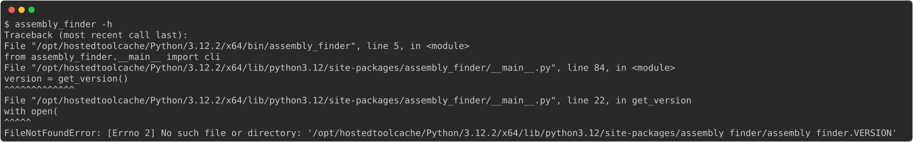

Assembly Finder


Assembly finder is a Snakemake-powered cli to download genomes with NCBI datasets.
Installation
Usage
Command
Output
📂staphylococcus_aureus
┣ 📂download
┃ ┣ 📂GCF_000013425.1
┃ ┃ ┗ 📜GCF_000013425.1_ASM1342v1_genomic.fna.gz
┃ ┗ 📜.snakemake_timestamp
┣ 📂logs
┃ ┣ 📂taxons
┃ ┃ ┗ 📜staphylococcus_aureus.log
┃ ┣ 📜archive.log
┃ ┣ 📜lineage.log
┃ ┣ 📜rsync.log
┃ ┗ 📜unzip.log
┣ 📜archive.zip
┣ 📜assembly_finder.log
┣ 📜assembly_summary.tsv
┣ 📜config.yaml
┣ 📜sequence_report.tsv
┗ 📜taxonomy.tsv
Command-line options
